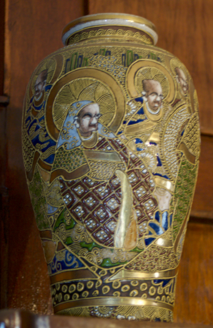
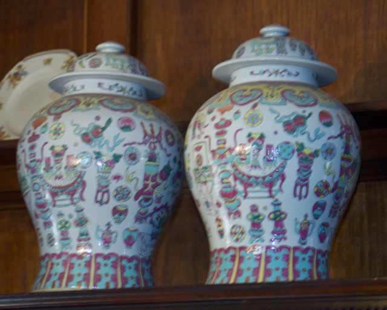

Japanese Satsuma Miniature Vase
Elegant Early 20th Century Pair of Vases
Origin: Japan
Era: Early 20th Century
Height: 6.5 cm
Condition: Excellent, with light body crazing typical of pottery from this period. The gilding is lightly rubbed around the base.
$950
These exquisite Japanese Satsuma miniature vases, crafted during the early 20th century, are a stunning example of detailed artistry. Adorned with intricate gilded patterns and beautifully painted panels featuring maidens, each vase stands at 6.5 cm in height. Their exceptional condition, with only minor age-related wear, makes them a remarkable addition to any antique collection.
Buy Now